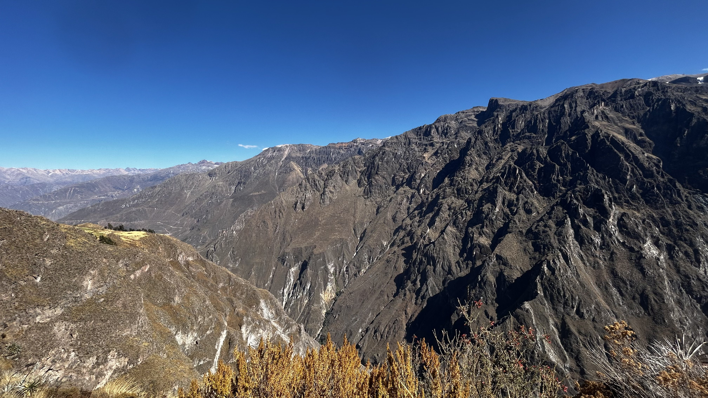
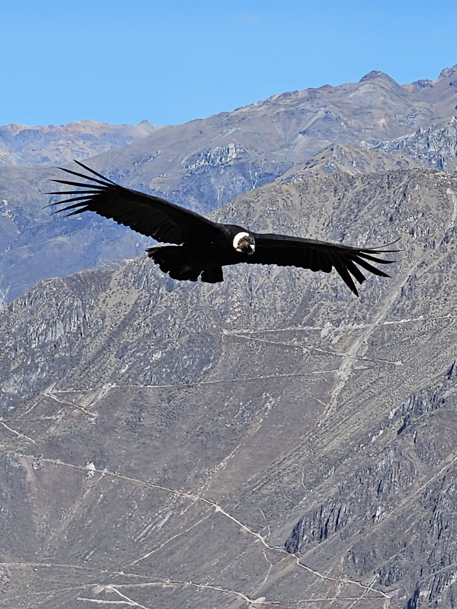
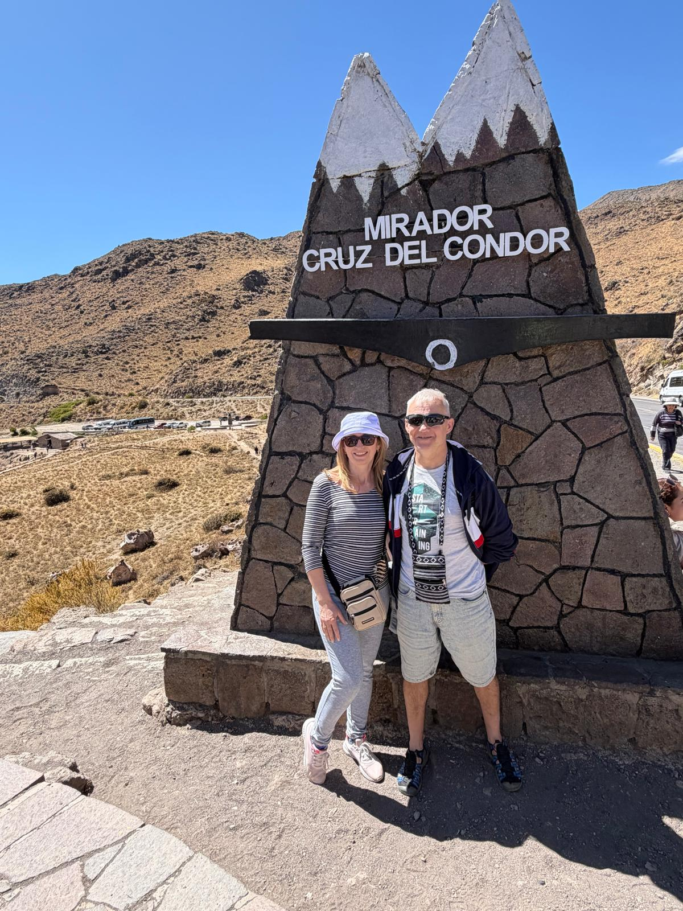

Wczesne śniadanie — o 6:00 — i wyjazd do punktu widokowego El Cruz del Condor — miejsca, które wielu podróżników traktuje jako jedno z największych przeżyć w Peru. I rzeczywiście — kiedy kondory andyjskie (jedne z największych ptaków latających na świecie) zaczęły krążyć nad kanionem, z rozłożonymi na kilka metrów skrzydłami — zaparło nam dech. Słońce leniwie wschodziło, rzucało złote światło na ściany kanionu, a my staliśmy z otwartymi ustami, nie wierząc, że coś takiego istnieje.
Przez chwilę panowała absolutna cisza — jedynie wiatr przemykał po skalnych ścianach. Było to jak ukłon natury — chwilowy spektakl, na który trzeba było być gotowym.
Po południu ruszyliśmy w drogę na południe, w kierunku Puno — nad wysokogórskie jezioro Titicaca.